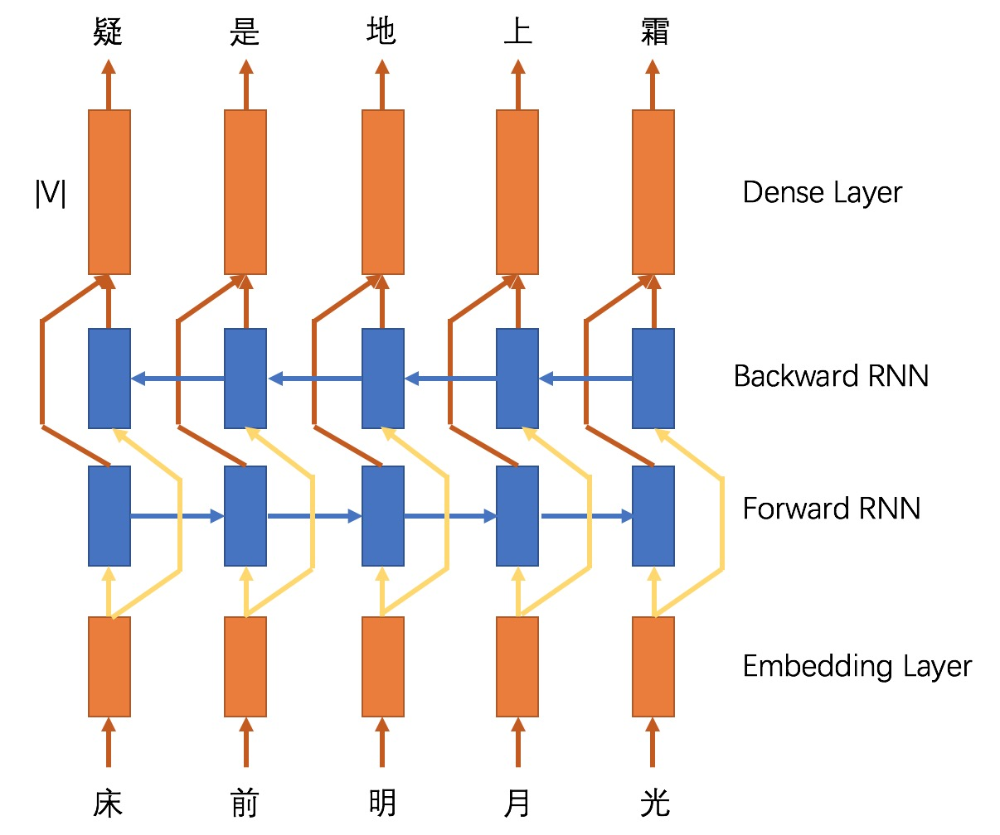

机器自动作诗，用户输入第一句诗，机器输出下一句诗。
注：本实验的实现基于字
从概率论的角度，实验任务可描述为在给定第一句诗\(FS\)时，求条件概率最大的第二句诗\(SS\)，即求
\[\mathop{argmax}_{SS} P(SS|FS)\]
由贝叶斯公式，
\[P(SS|FS) = \frac{P(FS|SS)P(SS)}{P(FS)} \propto P(SS)P(FS|SS)\]
在上式中，由于\(FS\)已经给定，故略去；\(P(SS)\)表示下一句诗的概率，该式称为语言模型；\(P(FS|SS)\)表示给定第二句诗时生成第一句诗的的条件概率，该式称为翻译模型。将语言模型继续分解：
\[P(SS) = P(s_1s_2...s_L) = P(s_1)P(s_2|s_1)P(s_3|s_1s_2)...P(s_n|s_1s_2...s_L)\]
从语言学的角度，句子中的字一般只与其附近的字有关，例如我爱吃红苹果一句，如果把果字拿掉，变成我爱吃红苹_，那么即使我们没有看到我爱吃三个字，而是仅看到红苹，我们也可以推出下一个字应为果。因此，我们假设诗句中的第\(i\)个字只受前\(n-1\)个字约束，即：
\[P(s_i|s_1s_2...s_{i-1}) \approx P(s_i|s_{i-n+1}...s_{i-1})\]
进而，
\[P(SS) = P(s_1s_2...s_L) \approx \prod_{i=1}^{L} P(s_i|s_{i-n+1}...s_{i-1})\]
其中当 \(j < 1\) 时认为 \(s_j\) 为空，例如\(P(s_2|s_{-1}s_{0}s_1)=P(s_2|s_1)\)。上述语言模型即 \(n-gram\) 语言模型，特别地，当\( n = 2 \)时，
\[P(SS) = P(s_1s_2...s_L) \approx \prod_{i=1}^{L} P(s_i|s_{i-1}) = P(s_1)P(s_2|s_1)P(s_3|s_2)...P(s_L|s_{L-1})\]
即诗句第 \(i\) 个字只与第 \(i-1\) 有关，而与前面的字无关，该诗句的生成过程就是一个马尔科夫链。各个“子条件概率”的计算如下：
\[P(s_n|s_1...s_{n-1}) = \frac{C(s_1...s_n)}{C(s_1...s_{n-1})}\] \[P(s_i) = \frac{C(s_i)}{N_{1-gram}}\]
其中，\(C(s_1...s_n)\)指在\(s_1...s_n\)语料库中出现的频数，\(N_{1-gram}\)指语料库中的 \(1-gram\) 总数，即总字数。
同样地，翻译模型\(P(FS|SS)\)可分解为：
\[P(FS|SS) = P(f_1f_2...f_L|s_1s_2...s_L) \approx \prod_{i=1}^{L} P(f_i|s_i)\] \[P(f_i|s_i) = \frac{C(match(f_i, s_i))}{C_{SS}(s_i)}\]
其中，\(C_{SS}(s_i)\)指\(s_i\)在语料库的所有第二句诗中出现的频数，\(C(match(f_i, s_i))\)指\(f_i\)与\(s_i\)在语料库诗句对中的匹配次数。
在语言模型中，计算 \(P(s_n|s_1...s_{n-1}) = \frac{C(s_1...s_n)}{C(s_1...s_{n-1})}\) 条件概率时，存在分子为0或分母为0的情况，给计算句子概率带来困扰，因此需要引入平滑技术，本实验采用\(adding\ \lambda\)的平滑技术，即：
\[P(s_n|s_1...s_{n-1}) = \frac{C(s_1...s_n) + \lambda}{C(s_1...s_{n-1}) + V\lambda}\]
其中 \(V\) 为训练集的字形数目。当 \(C(s_1...s_n)\) 为0时，
\[P(s_n|s_1...s_{n-1}) = \frac{\lambda}{C(s_1...s_{n-1}) + V\lambda}\]
当 \(C(s_1...s_n)\) 与 \(C(s_1...s_{n-1})\) 均为0时，
\[P(s_n|s_1...s_{n-1}) = \frac{1}{V}\]
翻译模型中的 \(P(f_i|s_i) = \frac{C(match(f_i, s_i))}{C_{SS}(s_i)}\) 条件概率的计算也是同理，区别仅在于二者所使用的 \(V\) 不同，一者使用语言模型训练集的字形数目，另一者使用翻译模型训练集的字形数目。
设\(beam\ width = k\)，在确定\(s_i\)时，模型已经产生了生成概率前k大的 \(s_1...s_{i-1}\)字序列，其概率记为 \(Gen(s_1...s_{i-1})\)，现需确定k个\(s_i\)，使得\(Gen(s_1...s_i)\)的为前k大，递推公式为：
\[Gen(s_1...s_i) = Gen(s_1...s_{i-1})P(s_i|s_{i-n+1}...s_{i-1})P(f_i|s_i)\]
最后，模型可输出前k个生成概率最大的诗句。
由于我们的任务为作诗，诗句更注重对仗，诗句的流畅度次之，因此引入参数 \(\alpha\) ，
\[log P(SS|FS)\] \[ = \alpha log P(SS) + (1-\alpha) log P(FS|SS)\] \[ = \Sigma_{i=1}^{L} \alpha P(s_i|s_{i-n+1}...s_{i-1}) + \Sigma_{i=1}^{L} (1-\alpha) P(f_i|s_i)\]
采用目前流行的encoder-decoder框架，如下图所示：
将上一句诗 \(FS\) 的字向量作为encoder的输入，encoder的最后一个状态作为encoder的输出向量，该向量可看做 \(FS\) 的表示；decoder负责将该向量解码为下一句诗 \(SS\)。
在训练时，decoder的输入为加了前缀<s>的\(SS\)；在测试时，decoder的第i步输入为第i-1步输出字的embedding。
由于作诗任务的输出序列与输出序列长度相同，因此可以取消encoder-decoder框架中的decoder模块，encoder编码完之后可直接接入全连接层预测所对应的词，encoder采用双向RNN，具体如下图所示： 
网络学堂提供的《全唐诗》，包括41880首诗，213373对诗句对（逗号连接的上下句，字数相等），字总数2495760，字形数7471。
(FS, SS)，如绝句的第一句和第二句为一对，第三句和第四句为一对。诗句对集合，截取部分如下：
朝朝奉御临池上 不羡青松拜大夫
幽人听达曙 相和藓床吟
佳人忆山水 置酒在高台
降集翻翔凤 追攀绝众狙
圣主此时思共理 又应何处救苍生
化城若化出 金榜天宫开
樱桃未绽梅花老 折得柔条百尺长语言模型训练集，截取部分如下：
珠宫凤合迎萧史
案头丹篆小符灵
燕语惊愁态
轻风渡水香
争那牵情思
离愁暗断魂
燕拂回塘满
络纬床头和苦吟
将相多收蓟北功
丙寅岁
休牛马| BLEU | GLEU | |
|---|---|---|
| 统计机器翻译模型 | 0.0206 | 0.0349 |
| 神经网络seq2seq模型 | 0.0034 | 0.0074 |
| 神经网络encoder-dense模型 | 0.0567 | 0.0620 |
测试集的输出结果截取如下，格式为第一句诗(FS) 模型根据第一句诗的输出(TSS) |Ref:第一句诗原来所对的诗(SS)：
枝逐清风动 叶随白露生 |Ref:香因白雪知
远山应见繁华事 寒水不闻喧彩情 |Ref:不语青青对水流
远岸牧童吹短笛 孤舟移女湿长砧 |Ref:蓼花深处信牛行
鱼书曾替代 鸟语亦藏年 |Ref:香火有因缘
相思无路莫相思 相忆有门须相忆 |Ref:风里花开只片时
似见楼上人 如闻雨中客 |Ref:玲珑窗户开
新秋日后晒书天 旧春风前洗酒地 |Ref:白日当松影却圆
三展蜀笺皆郢曲 九成秦笔尽湘弦 |Ref:我心珍重甚琼瑶
此日令人肠欲断 何时见我眼初开 |Ref:不堪将入笛中吹
雪貌潜凋雪发生 云心暗损冰颜死 |Ref:故园魂断弟兼兄
荆吴相接水为乡 吴越共连山作客 |Ref:君去春江正淼茫
如裁一条素 似剪千叶红 |Ref:白日悬秋天
庭前有蝶争烟蕊 池上无人共水香 |Ref:帘外无人报水筒
似见楼上人 如闻雨中客 |Ref:玲珑窗户开枝逐清风动 叶随白露生，三展蜀笺皆郢曲 九成秦笔尽湘弦等等。枝逐清风动 香随清水开<eos><eos><eos> |Ref:香因白雪知
远山应见繁华事 一日无由不可寻<eos> |Ref:不语青青对水流
远岸牧童吹短笛 孤舟飞鹭入长沙<eos> |Ref:蓼花深处信牛行
鱼书曾替代 龙道不成笔<eos><eos><eos> |Ref:香火有因缘
相思无路莫相思 不见春风无限人<eos> |Ref:风里花开只片时
似见楼上人 不如山南山<eos><eos><eos> |Ref:玲珑窗户开
东邻舞妓多金翠 北上旌旗照碧烟<eos> |Ref:笑剪灯花学画眉
参差绿蒲短 萧瑟秋江远<eos><eos><eos> |Ref:摇艳云塘满
明日又行西蜀去 一年何处是君家<eos> |Ref:不堪天际远山重
文字一千重马拥 诗心一日不成斟<eos> |Ref:喜欢三十二人同
正下搜贤诏 无名奉圣恩<eos><eos><eos> |Ref:多君独避名
红杏园中终拟醉 白头白发长沾巾<eos> |Ref:白云山下懒归耕
琴上只闻交颈语 酒中犹似玉盘金<eos> |Ref:窗前空展共飞诗明日又行西蜀去 一年何处是君家。枝逐清风动 山随静露寒 |Ref:香因白雪知
远山应见繁华事 远向寒城落夕时 |Ref:不语青青对水流
远岸牧童吹短笛 遥惊风鸟去清舟 |Ref:蓼花深处信牛行
鱼书曾替代 鹤剑欲为荣 |Ref:香火有因缘
相思无路莫相思 秋风风断两别行 |Ref:风里花开只片时
似见楼上人 夜声月月攀 |Ref:玲珑窗户开
秋归旧窗竹 春绕半庭苔 |Ref:永夜一凄寂
何时得向溪头赏 不羡吟云竹下琴 |Ref:旋摘菱花旋泛舟
野风吹白芷 幽迹著清桑 |Ref:山月摇清轸
再来物景还依旧 宝腹风天自入秋 |Ref:风冷松高猿狖吟
不如来饮酒 稳卧醉陶醺 |Ref:相对醉厌厌
花开愁北渚 云落忆人来 |Ref:云去渡南湘code：代码data：语料，以及预处理的中间结果NMTModel：存储神经网络模型，未上传NMTResult：神经网络模型在测试集上的结果以及调参logreport：实验报告SMTResult：传统翻译模型在测试集上的结果以及调参log交互模式：
HYdeMacBook-Pro:code apple$ python SMT.py
Reading data...
Training...
Training Language Model...
Traning Translation Model...
输入诗句: 缀帘金翡翠
输出诗句: 宫殿玉鸳红
输入诗句: 不堪明月里
输出诗句: 不可入云中
输入诗句: 祝老师万事如意
输出诗句: 流年是千年似情
输入诗句: exit
HYdeMacBook-Pro:code apple$ 测试模式（将在SMTResult文件夹生成对测试集的测试结果）：
python SMT.py -m testpython NMTSeq2seqModel.pypython NMTSeq2DenseModel.py